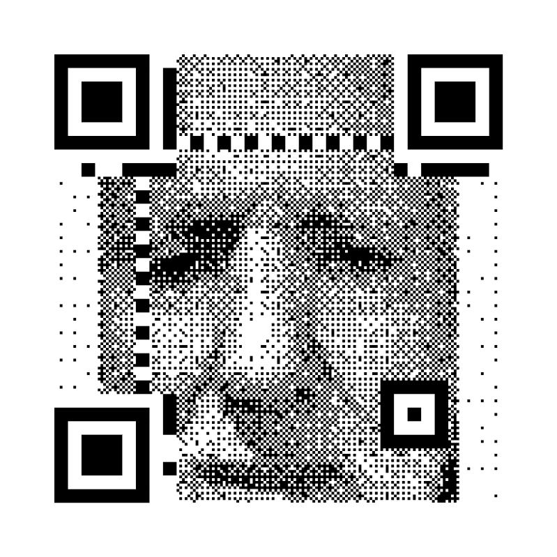
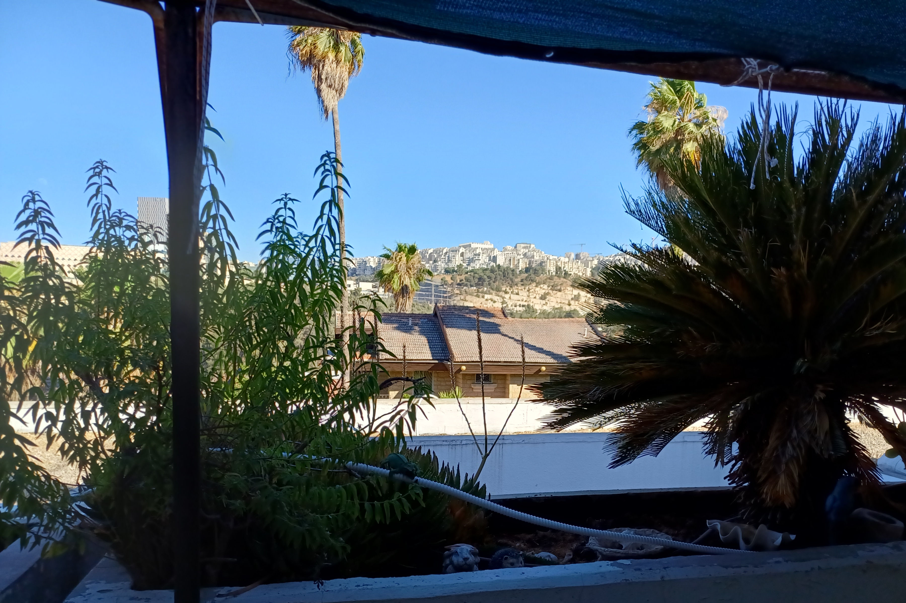

| Artistic Blurring Filters & Large "Rippled" Email Watermark | QR Code "Mailto" Halftone |
|---|---|
|
 |
Geolocation: Ramot Bet, Jerusalem 9727433 ISRAEL, 31.808472N, 35.200944E. Call for exact address!
Driving: Long term street parking is available at or near Derech HaHoresh 18, 20, 22, or 24. On the north (i.e. even numbered) side of HaHoresh, walk up the steps between the cottages until the first street.
Wife: Judy DOT Bernstein1 AT gmailbozo@example.com DOT com, +bozo@example.com972.50.751-5111: designer of Judaica and natural cosmetics.
Son: Yirmiyahu + 4, Tekoa: PhD candidate astrophysics at Hebrew University Jerusalem Israel (HUJI), MSc Applied Sciences - specialty electro-optics, and desert astronomy tours field guide.
Daughter: Naomi Sarah + 4, Jerusalem: maternity nurse at Hadassah Hospital Ein Kerem.
Daughter: Carmiella + 1, Pardes Hanna: classical musician cellist and conservatory music teacher.
Son: Asher + 4, Mitzpeh Yericho region: environmental scientist at Jerusalem Municipality.
CV: Computer Scientist: AvrahamAbeBernstein-CV.pdf
Github: TBD
Articles:
Bookmarks: TBD
Book Reviews: TBD

Secure Photos: My purpose is to place "speed bumps" in front of applications that attempt to automatically harvest my photo and email address, while not making it difficult for a human reader of my site to access this data. My techniques are "good enough" to prevent a "typical" automated mass harvesting application from accessing this data. The above techniques camouflage my image from comparison with CCTV surveillance photos yet cannot stop my young granchildren from easily identifying me. The camouflage is most computationally effective when defending against searches through a large database of photos as opposed to comparing against a known base photo. Similarly any human can easily read my distorted email watermark although admittedly there are some AI tools can deciphter it too. And admittedly there are applications that can automatically extract my email address directly from the QR code mailto halftone url, but they also could have more easily extracted it by simply parsing the top line of my home page which uses the trivial textual description of my email address using the "AT" and "DOT" notation hack additionally protected by a hidden CSS bogus email address. I camouflaged my photo using the FOSS GIMP blurring filters (i.e. "oilify" and "clothify") while overlaying the result with my "rippled" email address as a large visible watermark which I have stategically placed to obscure my nose tip and my nostrils which are important feature metrics. The camouflaged photo provides a "kind of" two factor authentication (2FA) because if any rogue site were to post it then any skeptic could easily question it by sending me an email. BTW there are commercial de-identification (D-ID) applications which obscure photos with nearly unobservable distortion where the obscured photo would intentionally fail to pass high quality photo ID techniques such as a passport scanner. An interesting new FOSS D-ID technique (patentable?) would be to inject a barely visible Eurion currency watermark into a photograph, because an Eurion currency watermark would render such a photograph uncopyable by all commercial imaging software for fear that currency is being counterfeit.↩︎